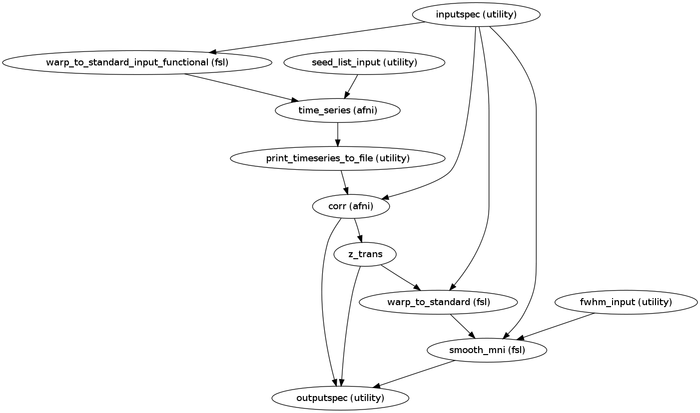
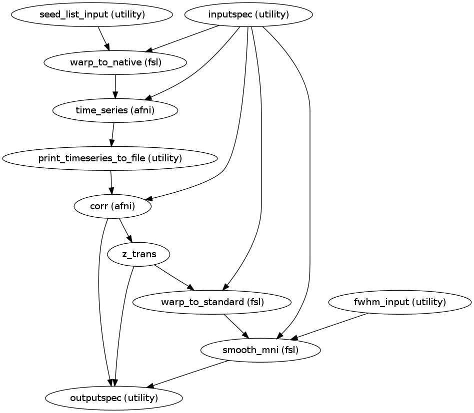

Map of the correlations of the Region of Interest(Seed in native or MNI space) with the rest of brain voxels. The map is normalized to contain Z-scores, mapped in standard space and treated with spatial smoothing.
| Parameters : | extraction_space : a string
|
|---|---|
| Returns : | sca_workflow : workflow
|
Notes
Workflow Inputs:
seed_list_input.seed_list : list (string existing nifti file)
A list of seeds/ ROI iin MNI space.
inputspec.rest_res_filt : string (existing nifti file)
Band passed Image with Global Signal , white matter, csf and motion regression. Recommended bandpass filter (0.001,0.1) )
inputspec.rest_mask2standard : string (existing nifti file)
A mask volume(derived from the functional volume) in standard in standard space.
Used in spatial smoothing the Z-transformed correlations in MNI space
inputspec.premat : string (existing affine transformation .mat file)
Transformation from native functional space to T1 space
Specifies an affine transform that should be applied to the data prior to the non-linear warping.
inputspec.postmat : string (existing affine transformation .mat file)
Transformation from T1 space to native functional space
Specifies an affine transform that should be applied to the data following to the non-linear warping.
inputspec.fieldcoeff_file : string (existing nifti file)
File with warp coefficients/fields.
This typically the output given by the -cout parameter of fnirt during registration step
inputspec.ref : string (existing nifti file)
When Registering from MNI space to native space use the mean functional image in native space is used.
When registering from native to MNI MNI152_T1_STANDARD_RES nifti file is used(target space).
fwhm_input.fwhm : list (float)
For spatial smoothing the Z-transformed correlations in MNI space.
Generally the value of this parameter is 1.5 or 2 times the voxel size of the input Image.
Workflow Outputs:
outputspec.correlations : string (nifti file)
Correlations for the seed
outputspec.z_trans_correlations : string (nifti file)
Fisher Z transformed correlations of the seed
outputspec.z_2standard : string (nifti file)
Registered Z-Transformed Correlations to Standard Space
outputspec.z_2standard_FWHM : string (nifti file)
Spatially smoothed corr_Z_2standard.nii.gz
Order of commands:
When Extracting Time Series from ROI in standard space
Register rest_res_filt to standard space. For details see applywarp:
applywarp
-ref=${FSLDIR}/data/standard/MNI152_T1_STANDARD_RES.nii.gz
-in=rest_res_bandpassed.nii.gz
-out=rest_res2standard.nii.gz
-warp= highres2standard_warp.nii.gz
-premat= example_func2highres.mat
Extract the mean TimeSeries from ROI in standard space. For details see 3dROIstats:
3dROIstats
-quiet
-mask_f2short
-mask SEED_IN_MNI.nii.gz
rest_res2standard.nii.gz > TimeSeries.1D
Compute voxel-wise correlation with Seed Time Series. For details see 3dfim+:
3dfim+
-input rest_res_bandpassed.nii.gz
-ideal_file TimeSeries.1D
-fim_thr 0.0009
-out Correlation
-bucket corr.nii.gz
When Extracting Time Series from ROI in Native Space
Register Seed template in MNI to native space
applywarp
-ref=example_func.nii.gz
-in=SEED_IN_MNI.nii.gz
-warp=stand2highres_warp.nii.gz
-postmat=highres2example_func.mat
-out=SEED_IN_Native.nii.gz
-interp=nn
Extract the mean TimeSeries from ROI in standard space
3dROIstats
-quiet
-mask_f2short
-mask SEED_IN_Native.nii.gz
rest_res_bandpassed.nii.gz > TimeSeries_NATIVE.1D
Compute voxel-wise correlation with Seed Time Series
3dfim+
-input rest_res_bandpassed.nii.gz
-ideal_file TimeSeries.1D
-fim_thr 0
-out Correlation
-bucket corr.nii.gz
Common Steps
Fisher Z Transform the correlation. For details see 3dcalc:
3dcalc
-a corr.nii.gz
-expr 'log((a+1)/(1-a))/2'
-prefix corr_Z.nii.gz
Registering Z-transformed map to standard space (NONLINEAR)
applywarp
-ref=MNI152_T1_STANDARD_RES.nii.gz
-in=corr_Z.nii.gz
-out=corr_Z_2standard.nii.gz
-warp=highres2standard_warp.nii.gz
-premat=example_func2highres.mat
Spatially Smooth the Z-transformed map in standard space. For details see PrinciplesSmoothing fslmaths
fslmaths
corr_Z_2standard.nii.gz
-kernel gauss FWHM/ sqrt(8-ln(2))
-fmean
-mas rest_mask2standard.nii.gz
corr_Z_2standard_FWHM.nii.gz
Workflow Seed in MNI Space:
Workflow Seed in Native Space:
Examples
>>> sca_w = create_sca("mni")
>>> sca_w.inputs.fwhm_input.fwhm = [4.5, 6]
>>> sca_w.get_node('fwhm_input').iterables = ('fwhm', [4.5, 6])
>>> sca_w.inputs.seed_list_input.seed_list = ['seed_pcc.nii.gz', 'seed_dMPFC.nii.gz']
>>> sca_w.inputs.inputspec.premat = '/home/data/subject/func/example_func2highres.mat'
>>> sca_w.inputs.inputspec.postmat = '/home/data/subject/func/highres2example_func.mat'
>>> sca_w.inputs.inputspec.rest_res_filt = '/home/data/subject/func/rest_bandpassed.nii.gz'
>>> sca_w.inputs.inputspec.fieldcoeff_file = '/home/data/subject/func/highres2standard_warp.nii.gz'
>>> sca_w.inputs.inputspec.rest_mask2standard = '/home/data/subject/func/rest_mask2standard.nii.gz'
>>> sca_w.inputs.inputspec.ref = '/home/data/subject/func/example_func.nii.gz'
>>> sca_w.run()
Compute the sigma value, given Full Width Half Max. Further it builds an operand string and returns it
| Parameters : | fwhm : float |
|---|---|
| Returns : | op_string : string |
Write Timeseries values in an emty time series file
| Parameters : | time_series : list (float) |
|---|---|
| Returns : | ts_oneD : string (.txt file)
|